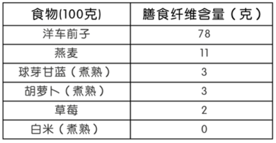

妃常健康E时代
Let’s Talk About HealthSV: 0
USD: 7
¥48.00
商品详情
交響樂以山白竹、明日葉，搭配多種草本植物及水果製成、含有植物性營養，讓您神采奕奕，樂享人生,讓您神采奕奕，樂享人生。
共有綜合水果、草莓、萊姆、金桔、桃子、茉莉、肉桂、薄荷等八種口味可供選擇。
电子票: 900012
产品详情
此产品在全国规格有所不同
请参阅产品标签获取产品规格资讯
问 ：根据研究，一般人每天需要多少纤维？
答 ：膳食性纤维仅存在于植物性食物如水果、蔬菜、坚果及谷类里，肉类、牛奶及蛋类则不含纤维。
常见食物膳食纤维含量

问 ：根据研究，一般人每天需要多少纤维？
答 ：膳食性纤维仅存在于植物性食物如水果、蔬菜、坚果及谷类里，肉类、牛奶及蛋类则不含纤维。
问 ：根据研究，一般人每天需要多少纤维？
答 ：膳食性纤维仅存在于植物性食物如水果、蔬菜、坚果及谷类里，肉类、牛奶及蛋类则不含纤维。
请参阅产品标签获取产品所有成分的资讯。这些产品不适用于诊断、治疗或预防任何疾病。如果您有任何身体上的不适，正在服用任何药物，或正处于怀孕或哺乳期，请在食用任何产品前向专业医师咨询。 本网站所载之资讯仅供参考用途，并无意也不可取代医生或其他医疗专业人士提供的建议。您不应单纯依据本网站或任何伊环球服务所提供之资讯决定采取或不采取行动。没有专业医师诊疗的情况下，不应使用该资讯诊断或治疗任何健康问题或疾病。 若因从伊环球网站或服务获取的资讯而造成的任何损失或损害，伊环球将不负任何的责任。使用伊环球网站或服务，包括阅读、浏览网页或购买交易，您即是同意了伊环球免于任何或所有因为使用伊环球网站或服务可能会引起的索赔或责任，并同意全权负责由于使用本网站或伊环球的服务而导致的任何法律、医疗和财务的责任与债务。
参考文献：
Medline Plus.(2014). Fiber. Retrieved from U.S National Library of Medicine website : https://www.nim.nih.gov/medlineplus/ency/article/002470.htm Psyllium husk powder.(n.d.). In Self.com. Retrieved from http://nutritiondata.self.com/facrs/custom/669594/2 Otas.(n.d.).In Self.com. Retrieved from http://nutritiondata.self.com/facts/cereal-grains-and-pasta/5708/2 Brussels sprouts, cooked, boiled, drained, without salt.(n.d.). In Self.com. Retrieved from http://nutritiondata.self.com/facts/vegetables-and-vegetable-products/2363/2 Carrots, raw.(n.d.). In Self.com. Retrieved from http://nutritiondata.self.com/facts/vegetables-and-vegetable-products/2383/2 Strawberries, raw.(n.d.). In Self.com. Retrieved from http://nutritiondata.self.com/facts/fruits-and-fruit-juices/2064/2 Rice, white, steamed, Chinese restaurant.(n.d.). In Self.com. Retrieved from http://nutritiondata.self.com/facts/cereal-grains-and-pasta/10641/2